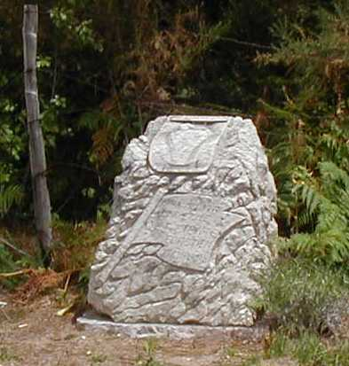

The Motorsport Memorial website
Motor Sport Monuments and Memorials - Le Mans, France
 |
Photo ©Chris Hall |
|
| This is the memorial stone to Sebastien Enjolras, the 21 year old WM driver who died
in practice for the 1997 24-Heures du Mans. You can make out the shape of his car at the
top of the stone. The stone itself is situated on the right hand side of the road about ¼ mile after Arnage corner. The two photos beneath the map show the view back and forward from the site. |
The Motorsport Memorial website